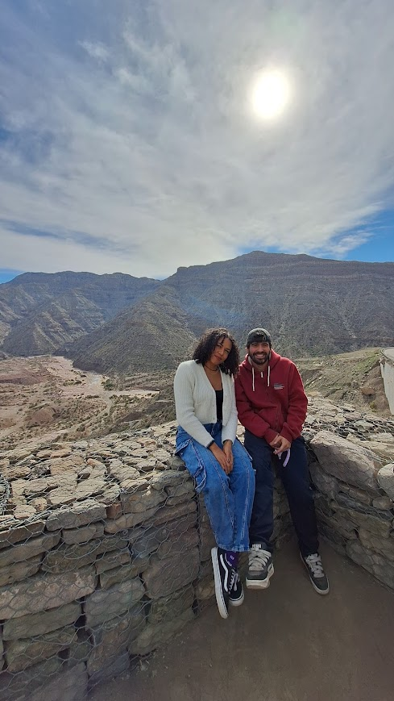

¿Qué querés hacer?
✉️ CARTAS A TRAVÉS DEL TIEMPO
Estás a punto de empezar un viaje.
Pero algunos de los mensajes más importantes de este viaje no necesitan ser enviados a otra persona.
Pueden ser enviados a vos mismo.
Escribile a quien vas a ser dentro de una semana. Dentro de algunos meses. Dentro de un año.
Dejá que el vos de hoy converse con el vos del futuro — a través de FutureMe.
💌 CARTAS EN CAMINO
No van a aparecer acá en el sitio — llegan directo a tu casilla de e-mail, a través de FutureMe, en estas fechas:
Y, si querés, escribite tu propia carta para cada uno de estos momentos también.
🔒 PRIVACIDAD
Para preservar la privacidad de estos mensajes, no quedan guardados acá en el sitio. El envío se hace a través de FutureMe, un servicio dedicado a entregar cartas en el futuro — es él quien se encarga de guardar y entregar tu carta en la fecha elegida. Nada de lo que escribas acá se guarda, se copia ni se envía a ningún otro lado más que a FutureMe.
PARA
FECHA DE ENTREGA SUGERIDA
✅ LISTA
Ahora vamos a enviarla a través de FutureMe, donde va a poder guardarse y entregarse en la fecha elegida.
Tu texto no va a quedar guardado en este sitio.
Son rituales. La propuesta no es cumplir obligaciones — es prestar atención.
🌙
Tocá el botón para recibir una pregunta.
No es un mapa turístico. Cada marca es un recuerdo.
$ play playlist.m3u
Tal vez hoy todo te parezca difícil.
Tal vez estés cansado.
Tal vez estés solo.
Tal vez haya pasado algo que te hizo pensar
que volver sería más fácil.
Solo quería recordarte:
no tenés que amar todos los días de este viaje.
Algunos días existen solo para ser atravesados.
Descansá. Respirá. Seguí un día más.
Mañana puede parecer distinto.
Y si necesitás desahogarte, o un poco de cariño, hablá con Sarang.
